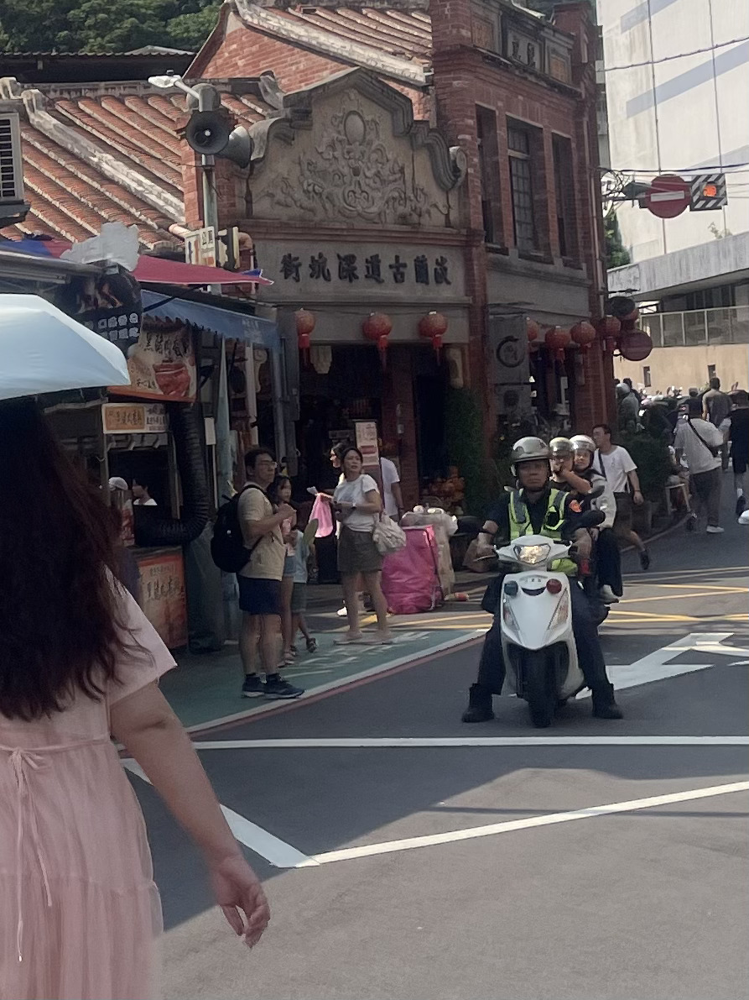
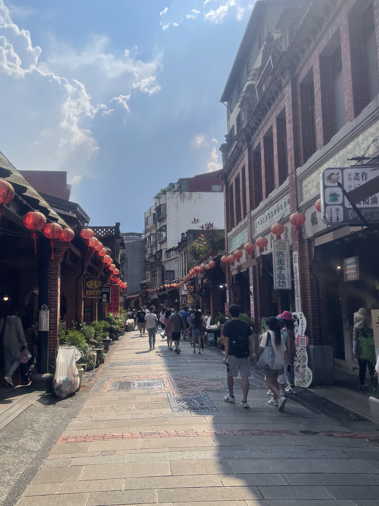
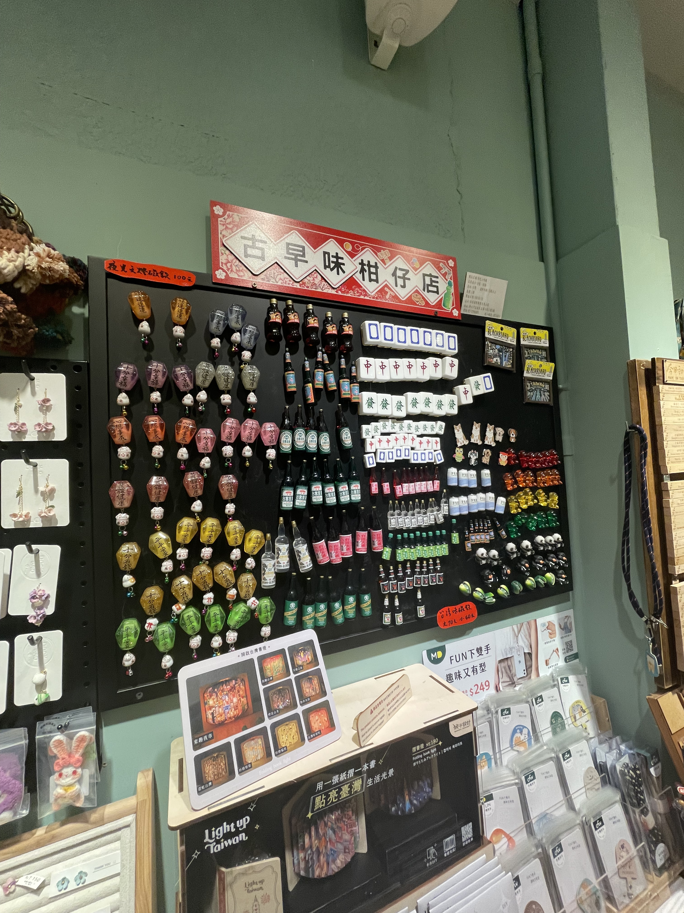

新北市深坑區
基本資訊
位於新北市東北部，鄰近石碇區與板橋區，地處山區丘陵與溪谷交錯的地形。深坑因地理環境保留了豐富自然景觀與傳統農村聚落，同時擁有便利的交通連結台北市，使其兼具自然與都市生活的特色。 深坑區歷史悠久，以農業及豆腐產業聞名，尤其是傳統手工豆腐聞名全台，形成獨特的在地產業文化。區內聚落沿著深坑溪兩岸展開，街道曲折狹窄，保留傳統山城聚落風貌，呈現自然山水與人文生活共生的景象。 交通方面，深坑透過北宜公路及主要地方道路與台北市及新北其他區域連接，捷運文湖線亦延伸至鄰近地區，提供居民日常通勤便利。整體而言，深坑區以手工豆腐文化、山林景觀及傳統聚落為核心特色，是新北市體驗山城生活與在地美食的重要區域。
推薦景點
| 深坑老街
是該區最具代表性的歷史街區，也被譽為「豆腐街」，因深坑手工豆腐聞名全台而聞名。老街沿著深坑溪兩岸展開，街道保留傳統石板鋪面與矮屋建築，呈現濃厚的山城聚落風格。 街區內聚集多家豆腐專賣店、傳統小吃店與特色餐館，遊客可品嚐豆腐乳、豆腐冰、炸豆腐及創意豆腐料理，體驗深坑特有的美食文化。除了豆腐，老街也保留部分早期建築與地方商業文化，散步其間可感受到濃厚的在地生活氛圍。 深坑老街周邊環境自然清幽，溪流與山林相伴，使其成為結合美食、歷史與自然景觀的休閒景點。整體而言，深坑老街不僅是品嚐傳統美食的熱門地點，也是體驗山城文化與傳統聚落生活的重要窗口。


